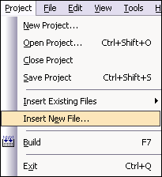

This lesson's objective is to show you how to create a custom user interface
element - a progress bar. In the process, you will learn the following programming skills:
- Design a custom gadget
- Implement a custom gadget
- Draw rectangles and frames
- Use system UI colors
- Use a gadget in a form
At the end of the lesson, you should be able to create a progress bar that
looks like this:

Step1: Getting started
First, create a simple project with a form (covered in earlier tutorials). Next, create a new gadget file:
| Select Project | Insert New File from the menu. |
 |
| Select the Gadget File template. Name the file
ProgressBarGadget.oc |
|
| |
|
Now you should have a gadget file named ProgressBarGadget.oc open in the
editor.
Step2: Design the progress bar
In order to design the progress bar, we need to think through following
questions.
- What functionality should the gadget have?
- How will a developer use the gadget?
- How should the gadget be drawn?
Methods:
Think from a developer perspective, the progress bar should at least have
the following methods:
- setrange(int min, int max) - set the range of the progress bar
- setvalue(int value) - set the current value of the progress bar
Drawing:
From the image above, we see that the progress bar looks like a normal Palm
OS control, with a dark border and a partially filled center. To draw this, we
first draw a large rounded rectangle in the background color to fill the entire
gadget. Next, we draw a rectangle within the gadget to represent the current
progress. Finally, we draw a border around the entire gadget.
It is important that the control match the current color scheme of the
device. To accomplish this, we use the Draw.uiColor() method to retrieve the
current system colors. The background is filled with uiColorObjectFill, the
completed portion of the bar is filled with uiColorObjectSelFill, and the border
is drawn with uiColorObjectFrame.
Now we are ready to implement our ideas.
Step3: Implementation
- By default, ProgressBarGadget.oc should contain a gadget template. Rename
the gadget name to ProgressBarGadget
- Add the following methods and fields to the gadget declaration:
// functionality related methods and properties
void setrange(int min, int max);
void setvalue(int value);
// internal state
int min; // maximum progress
int max; // maximum progress
int value; // current progress
// drawing related methods and properties
void ondraw(); // event handler method
void redraw(); // drawing routine
Draw draw; // draw object attached to gadget
int bgColor, borderColor, fillColor; // cached system UI colors
- Attach the draw object, and retrieve the system UI colors in the onopen method.
void ProgressBarGadget.onopen() {
// attach the draw object to the gadget
draw.attachGadget(gadget);
// cache the system UI colors
bgColor = draw.uiColor(uiColorObjectFill);
borderColor = draw.uiColor(uiColorObjectFrame);
fillColor = draw.uiColor(uiColorObjectSelFill);
}
- Define setrange() and setvalue() methods
void ProgressBarGadget.setrange(int min, int max) {
this.min = min;
this.max = max;
}
void ProgressBarGadget.setvalue(int value) {
this.value = value;
}
- Implement the ondraw() handler method to simply call the redraw()
method.
void ProgressBarGadget.ondraw() {
redraw();
}
- Implement the redraw() method, the core of this gadget. One
interesting thing to note is the set of parameters passed to the rect and
frame methods. The Palm OS draws rects and frames outside the box
specified by the x1, y1, x2, y2 values. Thus, to get the frame to touch the edge of
the gadget, we must specify these values as 1 pixel in from each edge.
void ProgressBarGadget.redraw() {
int offset;
// enable drawing
draw.begin();
// clear the background
draw.fg(bgColor);
draw.rect(clrFG, 1, 1, gadget.w-1, gadget.h-1, 3);
if (value > min) {
// draw the completed portion
draw.fg(fillColor);
offset = gadget.w * (value - min) / (max - min) - 1;
draw.rect(clrFG, 1, 1, offset, gadget.h-1, 3);
}
// draw the border
draw.fg(borderColor);
draw.frame(clrFG, 1, 1, gadget.w-1, gadget.h-1, 3, 1);
// disable drawing
draw.end();
}
Step4: Use the progress bar gadget in a form
Now that you have completed the gadget implementation, let's try it out in a
form.
| Right-click on mainForm in the Form Designer. |
|
| Select Add Gadget |
|
| In the Inspection window, change the Name attribute to gadProgress
and change the Gadget type attribute to ProgressBarGadget. |
|
| Adjust the gadget size |
|
Step5: Use the progress bar
Set the range of the progress bar in the form's onopen handler:
handler mainForm.onopen() {
gadProgress.setrange(0, 20);
}
Create a Go button on the form, and name it btnGo. Create an onselect handler
to step through the progress range like this:
handler btnGo.onselect() {
int i;
// hide the Go button while progressing
btnGo.visible = false;
// step through the whole progress bar
for (i=0;i<=20;i++) {
gadProgress.setvalue(i);
gadProgress.redraw();
sleep(100);
}
btnGo.visible = true;
}
Final Step: We are done!
- Now build the application.
- Download it to the emulator or the actual device.
- Start the application.
- Press the Go button and watch its progress.